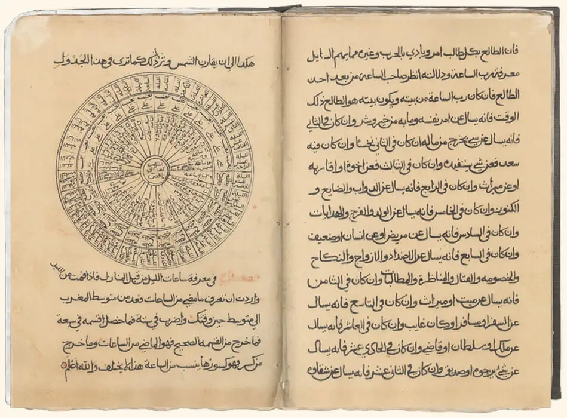

Omani researchers have said that there are an estimated 60,000 old Omani manuscripts in the possession of private and public libraries and some cultural institutions. Ten per cent of such old manuscripts are reachable and one per cent exist on the Internet.
Collection of old Arabic manuscripts began in Oman around 1876 on the foundation of the Ministry of National Heritage. The aim was to collect Arabic manuscripts which were in private hands.
It was possible to examine thousands of old Omani manuscripts. Hundreds of these, had been already catalogued.
Of the catalogued manuscripts, copies of the Koran, works on religious science, literature, philosophy, medicine, applied science, astronomy, history, and philology.
Many old Omani manuscripts were concerned with the falaj irrigation system, a system unique to Oman.
Manuscripts cover a wide period, ranging in date from 904 A.H. (1499 AD) until this century.


Media:


{kind=link}
{kind=link}
{kind=link}
{kind=link}
Selected Previous Global Tolerance Exhibitions:
Augsburg, Germany 2011
Leicester, UK 2012
Ljubljana, Slovenia 2014
Michigan, USA 2014
Seoul, South Korea 2014
Milan, Italy 2015
Skopje, Macedonia 2015
Toronto, Canada 2016
Córdoba, Spain 2016
Tokyo, Japan 2017
UNESCO, France 2018
UN, USA 2019